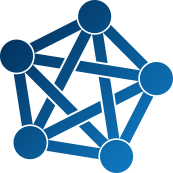

What is the Fediverse?
The Fediverse is a decentralized and federated network of social platforms. Public organizations can run their own servers which can work as verification for official accounts. This puts them in control over content and moderation rather than being at the mercy of billionaires.
More and more public organizations are getting active on the Fediverse. Mostly on Mastodon, a microblogging platform, but also on PeerTube, a video platform. The most common way to use it is to have an official account for the entire organization. Often there are also accounts for departments, services, projects and offices. Sometimes even employees can have accounts. Here, only accounts for the organizations are listed.
Also check our page with Fediverse statistics.
All Fediverse accounts by country, agency and platform
| Organization | Platform | Country | Account |
|---|---|---|---|
| {{ $organization }} | {{ .platformLabel }} | {{ $country_name }} | {{ .account }} |
Would you like to see more accounts and platforms added? Help us get the data in shape here.